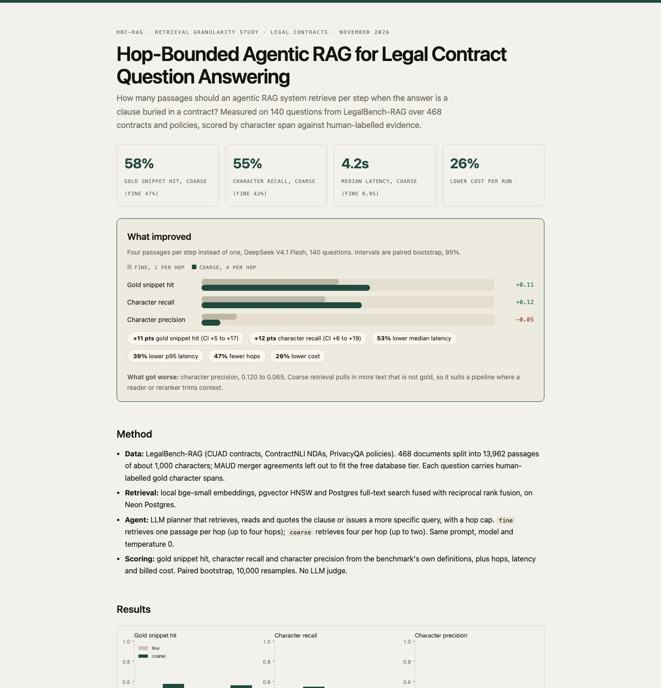
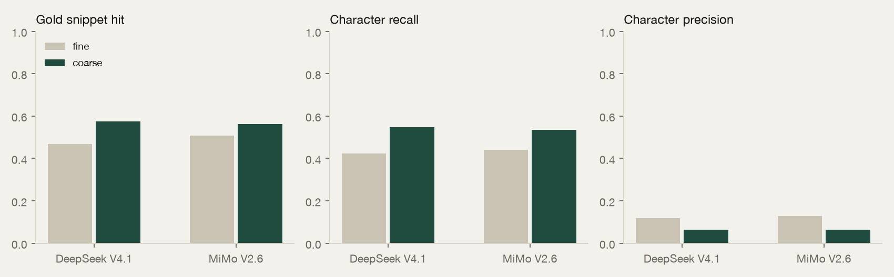
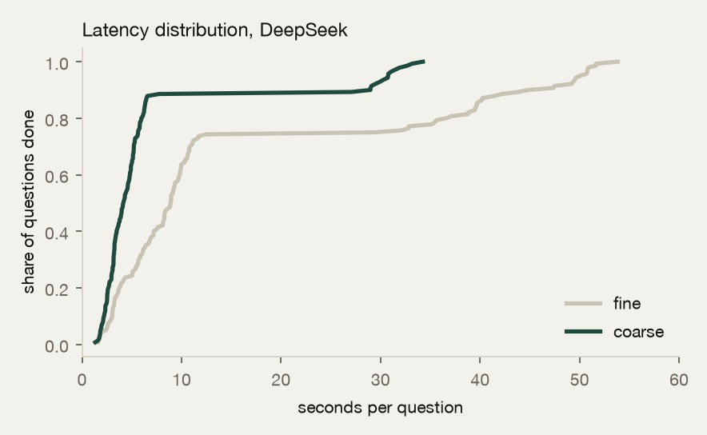
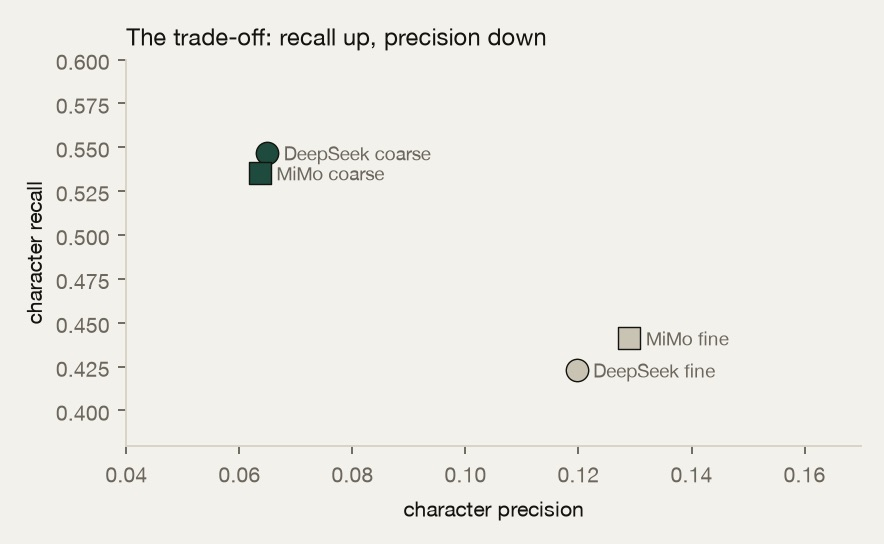

■Demo, screenshots and figures




01What it is
An agent that answers questions over legal contracts by planning a search, retrieving evidence, and verifying its answer against what it retrieved. A hop cap stops it looping. The study question is narrow: holding the model, prompt and corpus fixed, does retrieving four passages per step instead of one change quality, cost or latency?
02How it works
- Hybrid retrieval. pgvector HNSW for dense search plus Postgres full-text search, fused by reciprocal rank fusion, in a Neon Postgres database.
- One protocol, two policies. Fine fetches one passage per hop, coarse fetches four. Everything else is identical, so the difference is attributable to hop size.
- Scored against human labels. 468 contracts and privacy policies from LegalBench-RAG, split into 13,962 passages, with 140 questions scored by character span against the benchmark's labelled evidence, plus paired bootstrap intervals.
03What it measured
| DeepSeek, 140 questions | Clause hit | Char recall | Char precision | Median | Cost |
|---|---|---|---|---|---|
| One passage per hop | 0.469 | 0.423 | 0.120 | 8.9 s | $0.063 |
| Four passages per hop | 0.575 | 0.547 | 0.065 | 4.2 s | $0.047 |
Clause hit rises 10.6 points (95% CI +4.6 to +16.6) and character recall 12.4 points, both excluding zero. Precision falls, which is the expected cost of returning more text, and is reported rather than hidden. A second model family reproduces the recall gain; its clause-hit gain is not distinguishable from zero.
04What it does not claim
The evidence in LegalBench-RAG sits inside a single document, so this measures retrieval granularity within one contract, not multi-document reasoning. The benchmark has no gold answers, so no answer-accuracy claim is made. One seed per model; MAUD merger agreements were excluded to fit a free database tier.